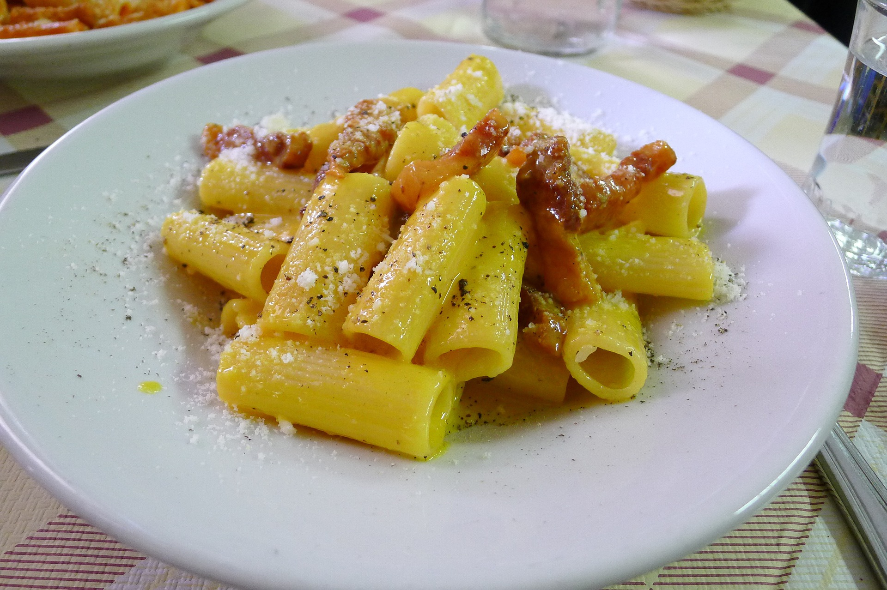

Pasta alla Carbonara

Descrizione
La pasta alla carbonara è un classico primo piatto della cucina italiana. Una ricetta amatissima che genera però
sempre molte discussioni, perché ognuno ne ha una propria versione. Questa è la nostra, che siamo certi vi darà grande
soddisfazione!
ingredienti
- 320 g di rigatoni
- 300 g di guanciale stagionato
- 50 g di pecorino romano DOP a Buccia Nera grattugiato
- 5 tuorli
- sale
- pepe
procedimento
- Ecco come preparare i rigatoni alla carbonara: per prima cosa pulite il pezzo di guanciale, eliminando la cotenna.
Tagliate a cubetti il pezzo di guanciale e metteteli a rosolare in un'ampia padella. Non serve olio,
in quanto il guanciale rilascerà il suo grasso durante la cottura. Una volta che il guanciale ha preso colore spegnete
il fuoco e conservate il grasso in eccesso.
- Dedicatevi ora alle uova, di cui userete solo i tuorli: sbatteteli in una boule di metallo con il grasso del guanciale
filtrato con un colino. Portate a bollore dell'acqua in una pentola. Appoggiate la ciotola sul bordo della
pentola e lavorate i tuorli con una frusta a bagnomaria. Aggiungete il pecorino e continuate a mescolare.
Togliete dal fuoco: se vi accorgete che la salsa ottenuta è troppo densa unite qualche cucchiaio di acqua calda,
al fine di ottenere un composto lucido e cremoso.
- Lessate i rigatoni al dente in acqua non troppo salata (il condimento è già molto sapido) e uniteli al guanciale.
Fate insaporite per un paio di minuti sul fuoco e trasferite il tutto in una zuppiera capiente.
A questo punto aggiungete la crema di tuorli, il pepe nero e amalgamate bene.
- Porzionate nei piatti da portata e completate con del pecorino e una spolverata di pepe nero.
I rigatoni alla carbonara sono pronti per essere serviti.